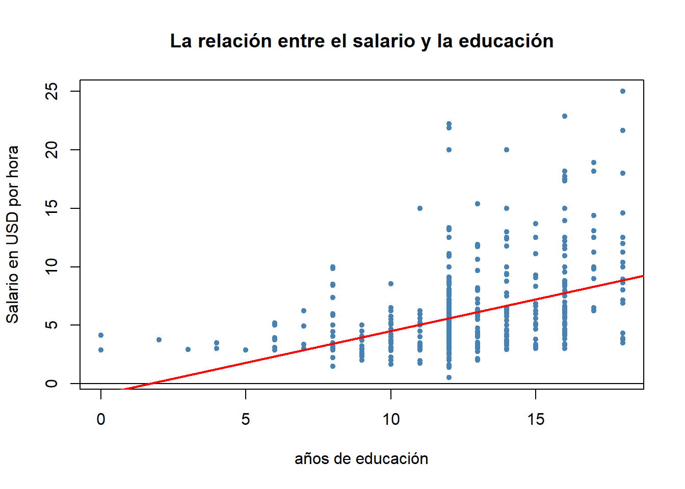
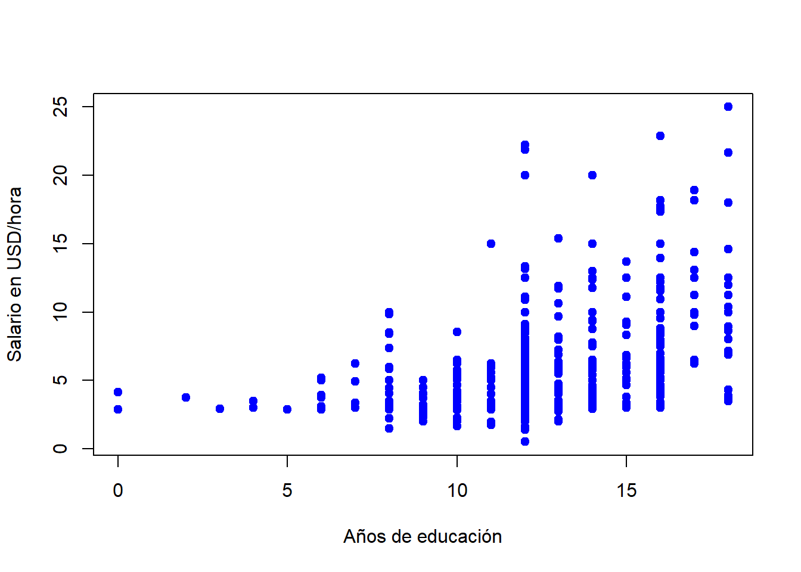
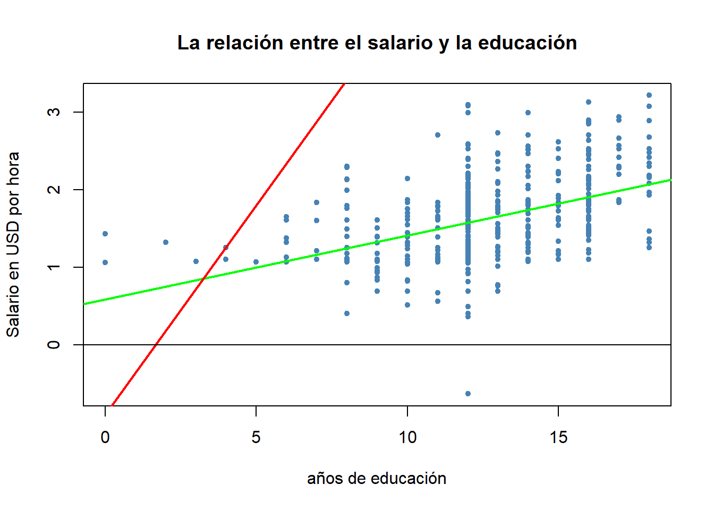
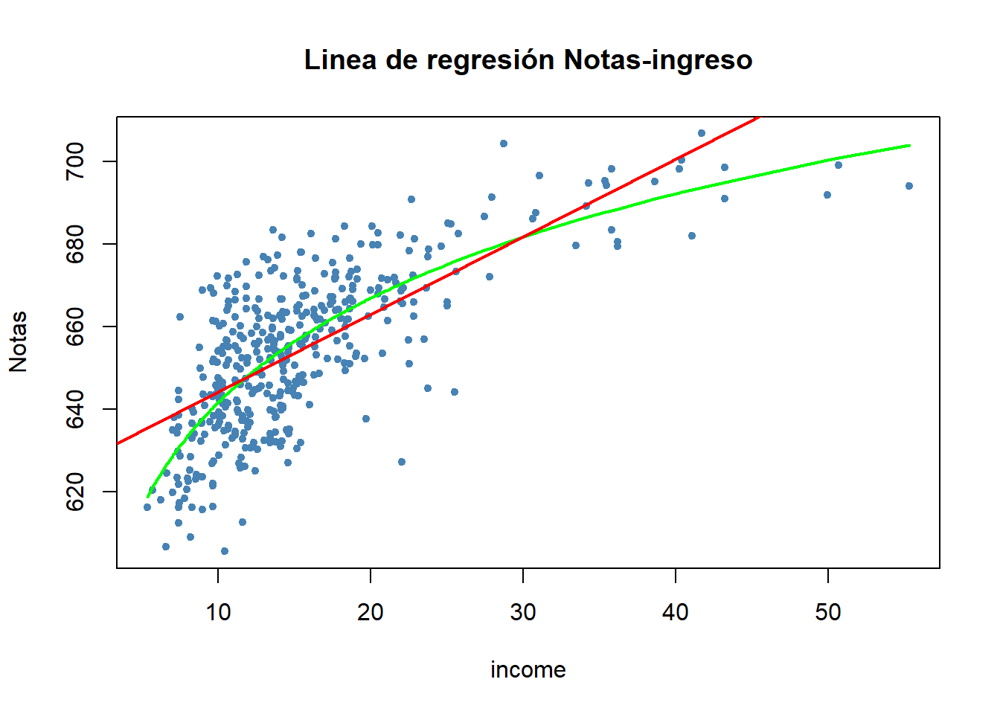
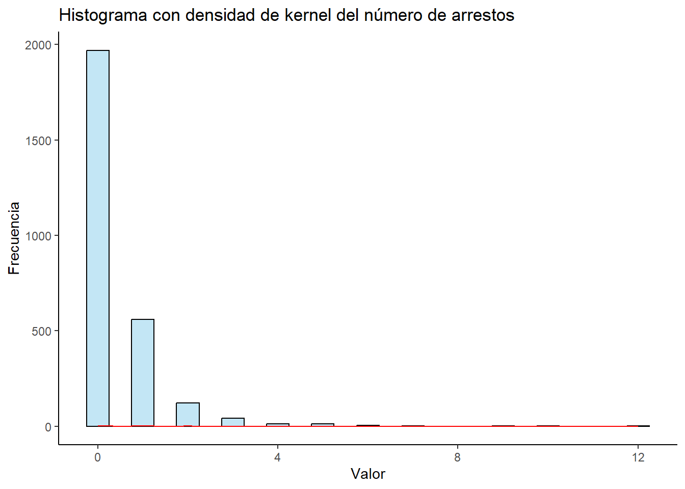

pacman::p_load(wooldridge,
stargazer,
tidyverse)5 Modelo Poisson
5.1 Introducción y motivación
Una tercera clase de variable dependiente no negativa es una variable de conteo, que puede asumir valores enteros no negativos: \([0,1,2,...]\), específicamente los que nos interesa son los casos en los que \(y\) asume pocos valores, incluido el cero. Ejemplos:
El número de medallas que puede obtener un deportista en una olimpiada,
El número de hijos que tiene una mujer
El número de publicaciones al año de un científico
Al igual que las respuestas, binaria y Tobit, un modelo lineal para \(E(y|x_1,x_2,...,x_k)\), quizá no proporciona el mejor ajuste a lo largo de todos los valores de las variables explicativas. Sin embargo, es informativo comenzar con un modelo lineal.
Como en un modelo Tobit no se puede obtener el logaritmo de una variable de conteo que asume valores de cero. Un método útil es modelar el valor esperado como una función exponencial:
\[E(y|x_1,x_2,...,x_k)=exp(\beta_0+\beta_1x_1+...+\beta_kx_k)\ [1]\]
5.1.1 Recordatorio
data("wage1", package = "wooldridge")
#Modelo lineal
salario.lm<-lm(wage~educ,
wage1)
library(stargazer)
stargazer(salario.lm,
type = "text")
===============================================
Dependent variable:
---------------------------
wage
-----------------------------------------------
educ 0.541***
(0.053)
Constant -0.905
(0.685)
-----------------------------------------------
Observations 526
R2 0.165
Adjusted R2 0.163
Residual Std. Error 3.378 (df = 524)
F Statistic 103.363*** (df = 1; 524)
===============================================
Note: *p<0.1; **p<0.05; ***p<0.01# Gráfica de la relación salario y la educación
plot(wage~educ,
wage1,
pch=20,
col="steelblue",
ylab = "Salario en USD por hora",
xlab="años de educación",
main="La relación entre el salario y la educación")
abline(0,0)
abline(salario.lm,
lw=2,
col="red")
plot(y=wage1$wage,
x=wage1$educ,
col="blue",
pch=19,
xlab="Años de educación",
ylab="Salario en USD/hora")
Interpretaciones
- Un aumento de un año de educación, esta asociado en promedio a un incremento en el salario de 54 centavos por cada trabajada.
Es decir que la forma funcional al parecer, es la siguiente:
\[wage=exp(\beta_0+\beta_1educ+u)\ [2]\]
La ecuación [2] no es lineal en los parámetros, para usar el modelo de regresión se usa un cambio usando la función logarítmica, tenemos:
\[log(wage)=\beta_0+\beta_1educ+u\]
log.lin<-lm(log(wage)~educ,
wage1)
stargazer(log.lin,
type = "text")
===============================================
Dependent variable:
---------------------------
log(wage)
-----------------------------------------------
educ 0.083***
(0.008)
Constant 0.584***
(0.097)
-----------------------------------------------
Observations 526
R2 0.186
Adjusted R2 0.184
Residual Std. Error 0.480 (df = 524)
F Statistic 119.582*** (df = 1; 524)
===============================================
Note: *p<0.1; **p<0.05; ***p<0.01Intepretación
exp(coef(log.lin)[1])(Intercept)
1.792789 \(e^{0.584}=1.79\) Si no hay cambios en la educación, se predice un ingreso promedio por hora trabajada de 1.79 USD
Un aumento de un año en la educación esta asociado a un incremento de 8.3% en el salario por hora trabajada
# Gráfica de la relación salario y la educación
plot(log(wage)~educ,
wage1,
pch=20,
col="steelblue",
ylab = "Salario en USD por hora",
xlab="años de educación",
main="La relación entre el salario y la educación")
abline(log.lin,
lw=2,
col="green")
abline(salario.lm,
col="red",
lwd=2)
abline(0,0)
5.1.2 Otro ejemplo
data("CASchools", package = "AER")
CASchools$Notas<-(CASchools$read+CASchools$math)/2
lineal.model<-lm(Notas~income,
CASchools)
lineal.log<-lm(Notas~log(income),
CASchools)
plot(Notas~income,
CASchools,
col="steelblue",
pch=20,
main="Linea de regresión Notas-ingreso")
order_id2<-order(CASchools$income)
lines(CASchools$income[order_id2],
fitted(lineal.log)[order_id2],
col="green",
lwd=2)
abline(lineal.model,
col="red",
lwd=2)
Volviendo a la ecuación [1], debido a que \(exp(.)\) siempre es positivo. [1] asegura que los valores predichos para \(y\) también sean positivos. Aunque [1] es más complicada que un modelo lineal, básicamente ya se sabe como interpretar los coeficientes, al obtener el logaritmo de la ecuación [1]
\[log[E(y|x_1,...,x_k)]=\beta_0+\beta_1x_1+...+\beta_kx_k\ [2]\] es decir, que el logaritmo del valor esperado es lineal. Por lo tanto, mediante las propiedades de la aproximación de la función logaritmo tenemos:
\[\%\Delta E(y|\mathbf{x})\approx(100\beta_j)\Delta x_j[3]\] Es decir, \(100\beta_j\) es el cambio porcentual en \(E(y|\mathbf{x})\), dado un incremento de una unidad en \(x_j\). A veces, es necesaria una estimación más precisa y es fácil de encontrar una, al observar los cambios discretos en el valor esperado. Manteniendo todas la variables explicativas fijas, excepto \(x_j\) y, sea \(x_k^0\) el valor inicial y \(x_k^1\) el valor siguiente. Entonces, el cambio proporcional en el valor esperado es:
\[[exp(\beta_o+\mathbf{x_{k-1}\beta_{k-1}}+\beta_kx_k^1)/exp(\beta_o+\mathbf{x_{k-1}\beta_{k-1}}+\beta_kx_k^0)]-1=exp(\beta_k\Delta{x_k})-1\ [4]\]
Donde: \(\mathbf{x_{k-1}\beta_{k-1}}\) es una abreviatura de \(\beta_1x_1+..+\beta_{k-1}x_{k-1}\) y, \(\Delta{x_k}=x_k^1-x_k^0\). Cuando \(\Delta{x_k}=1\), la variable \(x_k\) es binaria que se cambia de cero a uno, entonces el cambio es \(exp(\beta_k)-1\). Dada \(\widehat{\beta}_k\), se obtiene \(exp(\widehat{\beta}_k)-1\) y se multiplica por el 100 para transformar el cambio proporcional en un cambio porcentual.
Si por ejemplo \(x_j=log(z_j)\) para alguna variable \(z_j>0\), entonces su coeficiente \(\beta_j\) se interpreta como una elasticidad respecto a \(z_j\)
Debido a que [1] es no lineal en sus parámetros, no se puede usar métodos de regresión lineal. Entonces usamos la estimación máxima verosimilitud (EMV) y también el método relacionado a la estimación de cuasi máxima verosimilitud (ECMV)
A lo largo de los cursos de econometría se ha presentado la normalidad como el supuesto de distribución estándar para regresión lineal. Este supuesto no puede usarse en una variable de conteo (pues la distribución normal es para variables continuas que asuman todos los valores) que asume sólo pocos valores, la distribución será muy distinta a la normal. En su lugar, la distribución nominal para los datos de conteo es la distribución Poisson
Como nos interesa el efecto de las variables explicativas sobre \(y\), se debe observar la distribución de Poisson condicional a \(\mathbf{x}\). La distribución Poisson está determinada por completo por su media, así sólo se necesita especificar \(E(y|\mathbf{x})\), esta tiene la misma forma de [1] que se abrevia \(exp(\mathbf{x\beta})\). Entonces, la probabilidad de que \(y\) será igual al valor \(h\), condicional sobre \(\mathbf{x}\), es:
\[P(y=h|\mathbf{x})=exp[-exp(\mathbf{x\beta})][exp(\mathbf{x\beta})]^h/h!, h=0,1,...\ [5]\] Donde \(h!\) denota el factorial. Esta distribución, que es la base del modelo de regresión de Poisson, permite hallar las probabilidades condicionales para cualquier valor de variables explicativas. Por ejemplo, \(P(y=0|\mathbf{x})=exp[-exp(\mathbf{x\beta})]\). Una vez que se tienen las estimaciones de \(\beta_j\), se pueden insertar en las probabilidades para diferentes valores \(\mathbf{x}\).
Dada una muestras aleatoria \([(\mathbf{x_i},y_i):i=1,2,...,n]\), se puede construir la función log-verosimilitud:
\[\mathcal{L(\beta)}=\Sigma_{i=1}^n\mathcal{l_i(\beta)}=\Sigma_{i=1}^n[y_i\mathbf{x_i\beta}-exp(\mathbf{x_i\beta})]\ [6]\] Se desecha el término \(log(y_i!)\). Esta función se maximiza usando EMV, aunque la EMV de Poisson no es cerrada.
Igual que los modelo logit, probit y Tobit, no se pueden comparar directamente las magnitudes de las estimaciones del Poisson de una función exponencial con las estimaciones de MCO. se hace comparables de la siguiente forma:
5.1.2.1 Variables explicativas continuas
Se aplica el efecto parcial de \(x_j\) respecto a \(E(y|x_1,x_2,..,x_k)\):
\[\frac{\partial E(y|x_1,x_2,..,x_k)}{\partial x_j}=exp(\beta_0+\beta_1x_1+...+\beta_kx_k)\times \beta_j [7]\] Es interesante el factor escalar EPP:
\[n^{-1}\Sigma_{i=1}^nexp(\hat{\beta}_0+\hat{\beta}_1x_1+...+\hat{\beta}_kx_k)=n^{-1}\Sigma_{i=1}^n\hat{y}_i [8]\]
es simplemente el promedio muestral \(\bar{y}\) de \(y_i\) donde se definen los valores ajustados como \(\widehat{y}_i=exp(\hat{\beta}_0+\mathbf{x_i\hat{\beta}})\). Es decir, para la regresión Poisson con una función media exponencial, el promedio de los valores ajustados es el mismo que el promedio de los resultados originales de \(y_t\), tal como el caso de regresión lineal. Esto simplifica el escalar de las estimaciones Poisson \(\widehat{\beta}_j\), para hacerlas comparables a las estimaciones MCO, \(\widehat{\gamma}_j\) para una variable explicativa continua, se puede comparar con \(\widehat{\gamma}_j\) con \(\bar{y}.\widehat{\beta}_{j}\)
Aunque el análisis de EMV de Poisson es un primer paso para los datos de conteo, suele ser muy restrictivo. Todas las probabilidades y los momentos mayores de la distribución Poisson se determinan por completo por la media. Por ejemplo, la varianza es igual a la media:
\[Var(y|\mathbf{x})=E(y|\mathbf{x})\hspace{0.5cm} [9]\] Esto es restrictivo y se viola en muchas aplicaciones. Por fortuna, la distribución de Poisson tiene una propiedad de robustez muy buena, es decir, que se mantenga o no la distribución de Poisson, se obtienen estimadores asistóticamente normales y consistentes con las \(\beta_j\)
Cuando se EMV de Poisson, pero no se supone que la distribución de Poisson sea correcta, este análisis recibe el nombre de Estimación de cuasi máxima verosimilitud (ECMV). LA ECMV de Poisson es muy útil debido a que esta programada en muchos paquetes econométricos. Sin embargo, a menos que el supuesto de varianza de Poisson [9] se mantenga, se deben ajustar los errores estándar, de la siguiente forma:
El ajuste a los errores estándar está disponible cuando se supone que la varianza es proporcional a la media:
\[Var(y|\mathbf{x})=\sigma^2E(y|\mathbf{x})\ [10]\] Donde: \(\sigma^2\) es un parámetro desconocido.
Cuando \(\sigma^2=1\) se obtiene el supuesto de varianza de Poisson [9]
Si \(\sigma^2>1\) la varianza es mayor que la media para toda \(\mathbf{x}\), esto se llama sobredispersión común en regresiones de conteo.
- Si \(\sigma^2<1\) la varianza es menor que la media para toda \(\mathbf{x}\), esto se llama subdispersión es poco común.
Bajo [10] es fácil ajustar los errores estándar de la EMV de Poisson. Si \(\hat{\beta}_j\) denota la ECMV de Poisson y se definen los residuales como \(\hat{u}_i=y_i-\hat{y}_i\), donde \(\hat{y}_i=exp(\hat{\beta}_0+\hat{\beta}_1x_{i1}+...+\hat{\beta}_kx_{ik})\). Un estimador consistente de \(\sigma^2=(n-k-1)^{-1}\sum_{i=1}^n\frac{\hat{u}_i^2}{\hat{y}_i}\), donde la división entre \(\hat{y}_i\) es el ajuste apropiado de heterocedasticidad y \(n-k-1=gl\) dadas las \(n\) observaciones y \(k+1\) estimadores \(\hat{\beta}_0,\hat{\beta}_1,...,\hat{\beta}_k\). Si \(\sigma=\sqrt{\sigma^2}\), se multiplican los errores estándar Poisson usuales por \(\hat{\sigma}\). Si \(\hat{\sigma}\) es notablemente mayor que uno, los errores estándar corregidos pueden ser mucho mayores que los errores estándar nominales, generalmente son incorrectos, de la EMV de Poisson.
Bajo el supuesto de distribución de Poisson, se puede usar el estadístico de la razón de verosimilitudes para probar las restricciones de exclusión, que siempre, tienen la forma de \(RV=2(l_{nr}-L_r)\). Si se tiene \(q\) restricciones de exclusión, el estadístico se distribuye aproximadamente con \(\chi^2_q\) bajo la hipótesis nula. Bajo el supuesto menos restrictivo de [10], un simple ajuste está disponible si se divide \(RV=2(l_{nr}-L_r)\) entre \(\sigma^2\) donde \(\sigma^2\) se obtiene del modelo no restringido.
5.2 Ejemplo [Regresión de Poisson para número de arrestos]
La base de datos crime1 contiene información sobre arrestos durante 1986 y otros datos, sobre 2725 hombres nacidos en California en 1960 o 1961. Cada hombre de la muestra fue arrestado al menos una vez antes 1986.
Las variables:
- narr86: indica el número de veces que un hombre fue arrestado durante 1986: esta variable es cero para la mayoría de los hombres de la muestra (72.29%) y varía desde 0 hasta 12. (El porcentaje de hombres detenidos una sola vez durante 1986 es 20.51%)
pacman::p_load(wooldridge,
tidyverse)
data("crime1")
crime1 %>%
str()'data.frame': 2725 obs. of 16 variables:
$ narr86 : int 0 2 1 2 1 0 2 5 0 0 ...
$ nfarr86: int 0 2 1 2 1 0 2 3 0 0 ...
$ nparr86: int 0 0 0 1 0 0 1 5 0 0 ...
$ pcnv : num 0.38 0.44 0.33 0.25 0 ...
$ avgsen : num 17.6 0 22.8 0 0 ...
$ tottime: num 35.2 0 22.8 0 0 ...
$ ptime86: int 12 0 0 5 0 0 0 0 9 0 ...
$ qemp86 : num 0 1 0 2 2 4 0 0 0 3 ...
$ inc86 : num 0 0.8 0 8.8 8.1 ...
$ durat : num 0 0 11 0 1 ...
$ black : int 0 0 1 0 0 0 1 0 1 0 ...
$ hispan : int 0 1 0 1 0 0 0 0 0 1 ...
$ born60 : int 1 0 1 1 0 1 1 1 1 1 ...
$ pcnvsq : num 0.1444 0.1936 0.1089 0.0625 0 ...
$ pt86sq : int 144 0 0 25 0 0 0 0 81 0 ...
$ inc86sq: num 0 0.64 0 77.44 65.61 ...
- attr(*, "time.stamp")= chr "25 Jun 2011 23:03"# Tabla de porcentaje
crime1 %>%
with(table(narr86)) %>%
prop.table() %>%
round(digits = 2) %>%
print()narr86
0 1 2 3 4 5 6 7 9 10 12
0.72 0.21 0.04 0.02 0.00 0.00 0.00 0.00 0.00 0.00 0.00 - pcnv: Es la proporción (no el porcentaje) de detenciones anteriores a 1986 que condujeron a una condena (?)
crime1 %>%
with(table(pcnv)) %>%
round(digits = 2) %>%
print()pcnv
0 0.0799999982118607 0.0900000035762787 0.100000001490116
1260 2 1 1
0.109999999403954 0.129999995231628 0.140000000596046 0.170000001788139
1 3 6 17
0.180000007152557 0.200000002980232 0.219999998807907 0.230000004172325
2 24 4 4
0.25 0.259999990463257 0.270000010728836 0.28999999165535
53 1 2 21
0.300000011920929 0.310000002384186 0.319999992847443 0.330000013113022
4 2 1 139
0.360000014305115 0.379999995231628 0.389999985694885 0.400000005960464
7 20 1 40
0.409999996423721 0.419999986886978 0.430000007152557 0.439999997615814
1 5 14 10
0.449999988079071 0.469999998807907 0.5 0.529999971389771
4 3 313 1
0.540000021457672 0.560000002384186 0.569999992847443 0.600000023841858
2 8 11 34
0.620000004768372 0.629999995231628 0.639999985694885 0.670000016689301
1 6 2 85
0.699999988079071 0.709999978542328 0.730000019073486 0.75
1 2 1 20
0.800000011920929 0.829999983310699 1
8 3 574 - avgsen es la duración promedio de las condenas anteriores cumplidas (cero para la mayoría de casos)
crime1 %>%
with(table(avgsen)) %>%
print()avgsen
0 0.300000011920929 0.800000011920929 0.899999976158142
2591 1 2 2
1.10000002384186 1.39999997615814 2.20000004768372 2.29999995231628
5 1 1 1
2.59999990463257 2.90000009536743 3.5 4
2 1 1 2
4.30000019073486 4.80000019073486 4.90000009536743 5.5
1 1 1 2
5.59999990463257 6 6.09999990463257 6.19999980926514
4 1 2 1
6.30000019073486 6.69999980926514 6.90000009536743 7.09999990463257
1 1 1 3
7.19999980926514 7.59999990463257 7.80000019073486 7.90000009536743
1 1 2 1
8.10000038146973 8.19999980926514 8.30000019073486 8.39999961853027
1 1 1 1
8.60000038146973 8.89999961853027 9 9.10000038146973
2 1 2 1
9.30000019073486 9.5 9.60000038146973 9.69999980926514
1 1 1 2
9.80000019073486 9.89999961853027 10 10.5
1 1 1 1
10.6000003814697 10.6999998092651 10.8999996185303 11
1 1 2 1
11.1000003814697 11.3000001907349 11.3999996185303 11.6000003814697
1 1 1 2
11.6999998092651 11.8000001907349 11.8999996185303 12.1000003814697
1 2 3 1
12.1999998092651 12.3999996185303 12.5 12.6999998092651
2 1 2 1
12.8999996185303 13.3000001907349 13.3999996185303 13.6999998092651
1 1 1 1
14.1999998092651 14.3000001907349 14.3999996185303 14.8000001907349
1 1 1 1
15 15.6999998092651 16 16.1000003814697
1 1 1 1
16.2000007629395 16.5 16.6000003814697 17
1 1 1 1
17.1000003814697 17.6000003814697 17.7000007629395 18.3999996185303
1 1 1 3
18.5 18.7000007629395 18.8999996185303 19.2999992370605
1 1 2 2
20.2999992370605 20.6000003814697 21.7000007629395 21.7999992370605
1 1 1 1
22 22.7999992370605 23.5 23.8999996185303
1 1 1 1
24.3999996185303 24.6000003814697 30.3999996185303 31.2999992370605
1 2 1 1
31.7000007629395 31.8999996185303 35.4000015258789 36.0999984741211
1 1 1 1
39 40.5 47.0999984741211 59.2000007629395
1 1 1 1 - tottime: tiempo en prisión desde los 18 años (meses)
crime1 %>%
with(table(tottime)) %>%
print()tottime
0 0.300000011920929 0.800000011920929 0.899999976158142
2591 1 2 2
1.10000002384186 1.39999997615814 2.20000004768372 2.29999995231628
5 1 1 1
2.59999990463257 2.90000009536743 4 4.80000019073486
2 1 2 1
5.5 5.59999990463257 6 6.19999980926514
1 2 1 1
6.69999980926514 7 7.09999990463257 7.19999980926514
1 1 1 1
7.59999990463257 7.80000019073486 8.10000038146973 8.19999980926514
1 1 1 1
8.30000019073486 8.60000038146973 8.89999961853027 9
1 2 1 1
9.10000038146973 9.30000019073486 9.5 9.60000038146973
1 1 1 1
9.80000019073486 9.89999961853027 10.5 10.8999996185303
1 1 1 1
11 11.1000003814697 11.1999998092651 11.3000001907349
2 1 1 1
11.3999996185303 11.6000003814697 11.6999998092651 11.8000001907349
1 1 1 1
11.8999996185303 12.1999998092651 12.3999996185303 12.5
3 4 1 2
12.8999996185303 13.3000001907349 13.3999996185303 13.6999998092651
1 1 1 1
14.1999998092651 14.3000001907349 14.3999996185303 14.6999998092651
2 1 1 1
15.6999998092651 16.1000003814697 16.5 16.6000003814697
1 1 1 1
16.7999992370605 17 17.1000003814697 18
1 1 1 1
18.3999996185303 18.5 18.8999996185303 19.2999992370605
2 1 2 2
19.3999996185303 20 20.2999992370605 20.7000007629395
1 1 1 1
21.2000007629395 21.2999992370605 21.3999996185303 21.7000007629395
1 1 1 1
21.7999992370605 22 22.3999996185303 22.7999992370605
1 1 1 1
23.2000007629395 23.5 23.7000007629395 23.8999996185303
1 1 1 1
24.2000007629395 24.3999996185303 24.6000003814697 25.2000007629395
1 1 1 1
25.7999992370605 29.1000003814697 29.6000003814697 30
1 1 1 1
30.3999996185303 31.2000007629395 31.2999992370605 31.8999996185303
1 1 1 1
32 32.4000015258789 35.2000007629395 35.4000015258789
1 1 1 3
36.0999984741211 36.7999992370605 37.4000015258789 38.0999984741211
1 1 1 1
39 40.5 41.2000007629395 43.5999984741211
1 1 1 1
47.0999984741211 49.2000007629395 59.2000007629395 63.4000015258789
1 1 1 1 - ptime86: es el tiempo en meses que se ha pasado en prisión durante 1986
crime1 %>%
with(table(ptime86)) %>%
print()ptime86
0 1 2 3 4 5 6 7 8 9 10 11 12
2594 7 15 8 7 5 10 7 2 4 4 4 58 - qemp86: es la cantidad de trimestres que la persona tuvo empleo en 1986 (de cero a cuatro)
crime1 %>%
with(table(qemp86)) %>%
print()qemp86
0 0.600000023841858 0.899999976158142 1
648 1 1 294
1.39999997615814 1.60000002384186 1.70000004768372 1.79999995231628
1 1 1 3
2 2.09999990463257 3 3.40000009536743
337 1 437 1
4
999 ince86: ingresos legales, 1986, $100s
black 1 si es negro, cero otro caso
hispan 1 si es hispano, cero otro caso
born60 1 nacido en 1960, cero otro caso
5.2.0.1 Modelo de regresión Poisson
\[ \begin{aligned} E[narr86|\mathbf{x}]=exp\left(\beta_0+\beta_1pcnv+\beta_2avgsen+\beta_3tottime\\ +\beta_4ptime86+\beta_5qemp86+\beta_6ince86+\\ +\delta_1black+\delta_2hispan+\delta_3born\right) \end{aligned} \]
# Comprobar la variable de conteo
crime1 %>%
with(table(narr86)) %>%
print()narr86
0 1 2 3 4 5 6 7 9 10 12
1970 559 121 42 12 13 4 1 1 1 1 # Graficar la variable
ggplot(crime1, aes(x = narr86)) +
geom_histogram(binwidth = 0.5,
color = "black",
fill = "skyblue",
alpha = 0.5) +
geom_density(alpha = 0.5,
color = "red") +
labs(title = "Histograma con densidad de kernel del número de arrestos",
x = "Valor", y = "Frecuencia") +
theme_classic()
Ajustar el modelo usando MCO
narr86.MCO <- lm(narr86~
pcnv+
avgsen+
tottime+
ptime86+
qemp86+
inc86+
black+
hispan+
I(hispan*black)+
born60,
crime1)
narr86.MCO2 <- lm(narr86~
hispan,
crime1)
library(stargazer)
stargazer(narr86.MCO, narr86.MCO2,type = "text")
====================================================================
Dependent variable:
------------------------------------------------
narr86
(1) (2)
--------------------------------------------------------------------
pcnv -0.132***
(0.040)
avgsen -0.011
(0.012)
tottime 0.012
(0.009)
ptime86 -0.041***
(0.009)
qemp86 -0.051***
(0.014)
inc86 -0.001***
(0.0003)
black 0.327***
(0.045)
hispan 0.194*** 0.110***
(0.040) (0.040)
I(hispan * black)
born60 -0.022
(0.033)
Constant 0.577*** 0.380***
(0.038) (0.019)
--------------------------------------------------------------------
Observations 2,725 2,725
R2 0.072 0.003
Adjusted R2 0.069 0.002
Residual Std. Error 0.829 (df = 2715) 0.858 (df = 2723)
F Statistic 23.572*** (df = 9; 2715) 7.671*** (df = 1; 2723)
====================================================================
Note: *p<0.1; **p<0.05; ***p<0.01El modelo MCO supone que la variable \(y\) es cuantitativa aproximadamente continua, tenemos una variable de conteo
summary(narr86.MCO$fitted.values) Min. 1st Qu. Median Mean 3rd Qu. Max.
-0.4978 0.2346 0.4092 0.4044 0.5541 1.0210 No esta ajustando bien, pues arroja valores ajustados negativos el modelo MCO, recordar que la variable \(y\) es de conteo y comienza en cero y termina en 12
Ajuste con el modelo Poisson
narr86.poisson <- glm(narr86~
pcnv+
avgsen+
tottime+
ptime86+
qemp86+
inc86+
black+
hispan+
born60,
crime1,
family = poisson(link = "log"))
# Comparo el modelo Possion y MCO
stargazer(narr86.MCO, narr86.poisson,
type = "text",
df=F,
digits = 3,
title = "Tabla 1. Determinantes del número de arrestos de hombres jóvenes",
dep.var.caption = "Variable dependiente: Número de arrestos",
header = F,
column.labels = c("MCO", "Poisson"),
model.names = F,
report = "vct*")
Tabla 1. Determinantes del número de arrestos de hombres jóvenes
=============================================================
Variable dependiente: Número de arrestos
-----------------------------------------
narr86
MCO Poisson
(1) (2)
-------------------------------------------------------------
pcnv -0.132 -0.402
t = -3.264*** t = -4.726***
avgsen -0.011 -0.024
t = -0.926 t = -1.192
tottime 0.012 0.024
t = 1.279 t = 1.660*
ptime86 -0.041 -0.099
t = -4.638*** t = -4.763***
qemp86 -0.051 -0.038
t = -3.542*** t = -1.310
inc86 -0.001 -0.008
t = -4.261*** t = -7.762***
black 0.327 0.661
t = 7.199*** t = 8.950***
hispan 0.194 0.500
t = 4.880*** t = 6.761***
I(hispan * black)
born60 -0.022 -0.051
t = -0.675 t = -0.797
Constant 0.577 -0.600
t = 15.215*** t = -8.916***
-------------------------------------------------------------
Observations 2,725 2,725
R2 0.072
Adjusted R2 0.069
Log Likelihood -2,248.761
Akaike Inf. Crit. 4,517.522
Residual Std. Error 0.829
F Statistic 23.572***
=============================================================
Note: *p<0.1; **p<0.05; ***p<0.01mean(crime1$narr86)[1] 0.4044037Es común en los modelos Poisson que exista un mal cálculo de los errores estándar, pues puede haber sobre o sub dispersión de la varianza de acuerdo a la ecuación [10]
5.2.1 Estimación de \(\sigma^2\)
Recordemos la ecuación:
\[\sigma^2=(n-k-1)^{-1}\Sigma_{i=1}^n\frac{\widehat{u}_i^2}{\widehat{y}_i} [11]\] También recordar la ecuación para los residuales
\[\widehat{u}_i=y_i-\widehat{y}_i [12]\]
residuales <- narr86.poisson$y- narr86.poisson$fitted.values
sigma2<-(sum(residuales^2/narr86.poisson$fitted.values))/narr86.MCO[["df.residual"]]
sigma2[1] 1.516788raiz.sigma <- sqrt(sigma2)
raiz.sigma[1] 1.23158Comprobamos que en este caso \(\widehat{\sigma}^2\approx1.52>1\), entonces existe sobredispersión por lo que no se cumple la [9] \(Var(y|\mathbf{X})=E(y|\mathbf{X})\). Por lo tanto, se esta analizando con la ECMV
5.2.2 Ajustar los errores estándar
library(sandwich)
ees.ajustados<-list(sqrt(diag(vcovHC(narr86.MCO, type = "HC1"))),
raiz.sigma*sqrt(diag(vcovHC(narr86.poisson, type = "HC1"))))
stargazer(narr86.MCO, narr86.poisson,
type = "text",
df=F,
digits = 3,
title = "Tabla 2. Determinantes del número de arrestos de hombres jóvenes (ESHRA)",
dep.var.caption = "Variable dependiente: Número de arrestos",
header = F,
column.labels = c("Lineal MCO", "Exponecial ECMV-Poisson"),
model.names = F,
se=ees.ajustados)
Tabla 2. Determinantes del número de arrestos de hombres jóvenes (ESHRA)
=============================================================
Variable dependiente: Número de arrestos
-----------------------------------------
narr86
Lineal MCO Exponecial ECMV-Poisson
(1) (2)
-------------------------------------------------------------
pcnv -0.132*** -0.402***
(0.034) (0.125)
avgsen -0.011 -0.024
(0.014) (0.029)
tottime 0.012 0.024
(0.013) (0.025)
ptime86 -0.041*** -0.099***
(0.007) (0.028)
qemp86 -0.051*** -0.038
(0.014) (0.042)
inc86 -0.001*** -0.008***
(0.0002) (0.002)
black 0.327*** 0.661***
(0.058) (0.123)
hispan 0.194*** 0.500***
(0.040) (0.114)
I(hispan * black)
born60 -0.022 -0.051
(0.032) (0.100)
Constant 0.577*** -0.600***
(0.043) (0.110)
-------------------------------------------------------------
Observations 2,725 2,725
R2 0.072
Adjusted R2 0.069
Log Likelihood -2,248.761
Akaike Inf. Crit. 4,517.522
Residual Std. Error 0.829
F Statistic 23.572***
=============================================================
Note: *p<0.1; **p<0.05; ***p<0.015.2.3 Interpretación
Como se puede ver en la Tabla 2 los errores estándar MCO y Poisson son heterocedasticos-robustos. Los errores estándar de Poisson han sido multiplicados por el valor de sigma \(\widehat\sigma=1.232\), lo cual incide sobre la prueba \(t\) y por ende en su significancia estadística.
Los coeficientes del MCO y Poisson no son comparables directamente y tienen significados muy diferentes. Por ejemplo, el coeficiente de pcnv implica que, si \(\vartriangle{pcnv}=0.10\) el número esperado de arrestos deciende en 0.013 (\(0.10\times0.132\approx0.013\)) (pcnv es la proporcion de arrestos previos que desembocaron en una condena). El coeficiente de Poisson implica que \(\Delta{pcnv}=0.10\) reduce los arresto en cerca de 4% \([0.402\times0.10\approx 0.0402]\) y se multiplica esto por el 100% para obtener el efecto porcentual. Como cuestión de políticas, esto siguiere que se pueden reducir los arrestos generales en 4% si se incremente la probabilidad de condena en 0.10.
El coeficiente de Poisson de black implica que, ceteris paribus, el número esperado de arrestos para los hombres negros se estima cerca de \(100\times[exp(0.661)-1]\approx93.7\), es decir que la probabilidad de arrestos para los hombres negros es 93.7% mayor que para los hombres blancos con los mismos valores de las variables explicativas.
hispan<-(exp(coef(narr86.poisson)[9])-1)*100
hispan hispan
64.84134 El coeficiente de Poisson de hispan implica que, ceteris paribus, el número esperado de arrestos para los hombres hispanos se estima cerca de \(100\times[exp(0.5)-1]\approx 64.84\), es decir que la probabilidad de arrestos para los hombres hispanos es 64.87% mayor que para los hombres no hispanos con los mismos valores de las variables explicativas.
5.2.4 Efectos marginales de la Regresión Exponencial EMCV-Poisson
library(mfx)
poissonmfx(narr86~
pcnv+
avgsen+
tottime+
ptime86+
qemp86+
inc86+
black+
hispan+
born60,
crime1)Call:
poissonmfx(formula = narr86 ~ pcnv + avgsen + tottime + ptime86 +
qemp86 + inc86 + black + hispan + born60, data = crime1)
Marginal Effects:
dF/dx Std. Err. z P>|z|
pcnv -0.13218998 0.02770671 -4.7710 1.833e-06 ***
avgsen -0.00782541 0.00656405 -1.1922 0.23320
tottime 0.00806178 0.00485401 1.6608 0.09674 .
ptime86 -0.03244365 0.00677624 -4.7879 1.686e-06 ***
qemp86 -0.01251507 0.00960118 -1.3035 0.19241
inc86 -0.00266002 0.00031733 -8.3825 < 2.2e-16 ***
black 0.27712004 0.03843968 7.2092 5.627e-13 ***
hispan 0.19144813 0.03242309 5.9047 3.533e-09 ***
born60 -0.01668211 0.02079586 -0.8022 0.42245
---
Signif. codes: 0 '***' 0.001 '**' 0.01 '*' 0.05 '.' 0.1 ' ' 1
dF/dx is for discrete change for the following variables:
[1] "black" "hispan" "born60"5.2.5 Interpretaciones:
- Como se puede observar los efectos marginales de Poisson ya son comparables a los coeficientes de MCO, de tal manera que, el EPP de Poisson para la variables pcnv es igual al coeficiente de MCO, es decir ambos son de -0.13 aproximadamente. Donde existe diferencias marcadas entre el EPP y coeficiente de MCO es en black y en hispan. De la misma manera que se hizo en las interpretaciones de la Tabla 2 se debe aproximar mejor el efecto parcial de las variables binarias usando la ecuación [4]. Por ejemplo para black:
black.epp <-100*(exp(0.27712004)-1)
black.epp[1] 31.93247El coeficiente de Poisson de black de los efectos marginales implica que, ceteris paribus, el número esperado de arrestos para los hombres negros se estima cerca de \(100\times[exp(0.2771)-1]\approx31.93\), es decir que el porcentaje de arrestos para los hombres negros es 31.93% mayor que para los hombres blancos con los mismos valores de las variables explicativas.
hispan.epp <-100*(exp(0.19144813)-1)
hispan.epp[1] 21.1002